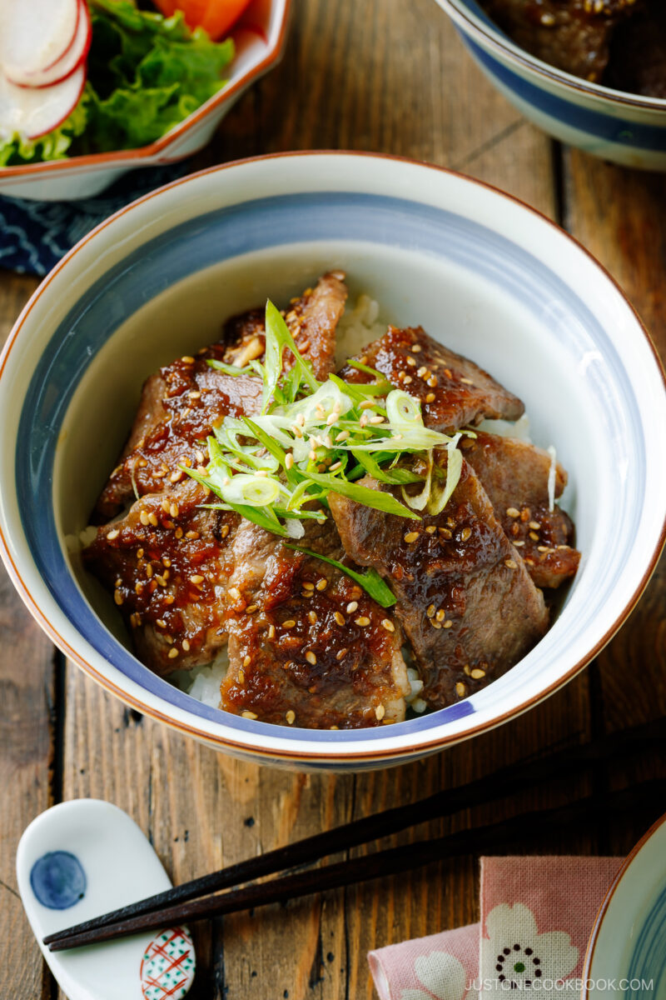

Yakiniku Don

Ingredients
- Boneless beef short-rib slices - I'll discuss more about this below.
- Store-bought or homemade yakiniku sauce
- Cooked short-grained rice - Make sure to cook the rice in advance or defrost your frozen rice (Freezing cooked rice is the best method).
- Green onion (for garnish)
- White sesame seeds (for garnish)
Instructions
- Prepare the yakiniku sauce if you are not using the store-bought one. Make sure you have steamed rice ready to go.
- Pan-grill the boneless beef short rib slices on medium heat in an ungreased frying pan. With well-marbled meat, you do not need to grease the area where you will cook it. Leave the meat untouched to cook until juices appear on the surface. Then, flip the meat. When the bottom side gets lightly browned, flip the meat once more. Cook briefly before removing from the grill. You only need to cook the thinly sliced beef for a few minutes.
- Cook the beef in batches, removing the cooked beef on a plate while adding a new batch in the frying pan. If you crowd the pan, the beef slices will be steamed instead of getting a nice char.
- Once all the beef slices are done, put them back in the pan and pour the yakiniku sauce. Coat well with the sauce and serve over the steamed rice.
- Put the chopped green onion on top and serve hot.
Other Information
Notes on Cooking
- Don't overcrowd the cooking surface. Give some space for turning over and even heating on the beef.
- Turn the meat over when the juice comes up on the surface, about 15-20 seconds. Until then, don't touch it. When the bottom side is slightly brown, turn the meat one more time and cook for a short time. Then enjoy! You only flip twice! Grilling guidelines should be 70% on the front side and 30% on the back side. Adjust the heat accordingly.
- Do not overcook. It should be quick “searing.” The remaining heat will continue to cook the beef while you are cooking the next batches. Also, remember that the beef will be reheated again with the sauce.
Homemade Yakiniku Sauce
Ingredients
- 1/4 sweet onion (75 g; grated, with juice)
- 3 cloves garlic
- 1/8 tsp ginger (grated)
- 1/4 tsp gochujang (Korean chili paste)
- 1/4 cup soy sauce
- 2 Tbsp sugar
- 1/2 Tbsp toasted white sesame seeds
- 1 tsp toasted sesame oil
- Gather all the ingredients.
- Grate 1/4 sweet onion. Make sure you collect all the juice.
- Transfer the grated onion and all of its juice to a mason jar or microwave-safe container. Mince or press 3 cloves garlic (I use a garlic press) and add to the jar.
- Grate the ginger (I use a ceramic grater) and collect ⅛ tsp ginger (grated).
- To the jar, add the grated ginger, 1/4 tsp gochujang (Korean chili paste), 1/4 cup soy sauce, and 2 Tbsp sugar.
- Add 1/2 Tbsp toasted white sesame seeds. Microwave the sauce for 30-35 seconds until it's hot enough to dissolve the sugar.
- Add 1 tsp toasted sesame oil and mix well. The Yakiniku Sauce is now ready to use.
Store in the refrigerator and use it within 2 weeks.
Source: Just One Cookbook
Back to recipes.